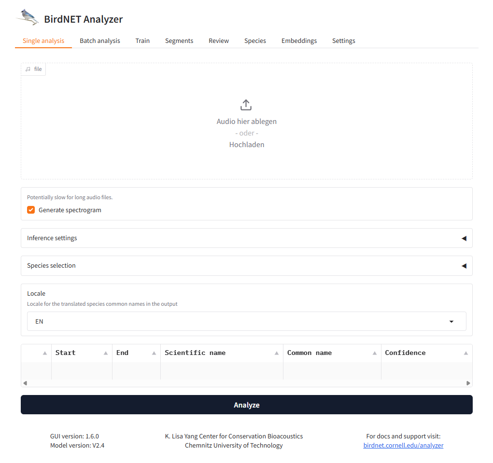

GUI
We provide a stand-alone GUI which lets you launch the analysis through a web interface.
You need to install two additional packages in order to use the GUI with pip install pywebview gradio
Launch the GUI with python -m birdnet_analyzer.gui.
Set all folders and parameters, after that, click ‘Analyze’. GUI items represent the command line arguments. For more information about the command line arguments, please refer to the Command line interface documentation.
Alternatively download the installer to run the GUI on your system.
Segment review
Please read the paper from Connor M. Wood and Stefan Kahl: Guidelines for appropriate use of BirdNET scores and other detector outputs.
The Review tab in the GUI is an implementation of the workflow described in the paper. It allows you to review the segments that were detected by BirdNET and to verify the segments manually. This can help you to choose an appropriate cut-off threshold for your specific use case.
General workflow:
Use the Segments tab in the GUI or the segments.py script to extract short audio segments for species detections.
Open the Review tab in the GUI and select the parent directory containing the directories for all the species you want to review.
Review the segments and manually check “positive” if the segment does contain target species or “negative” if it does not.
For each selected sample the logistic regression curve is fitted and the threshold is calculated.
GUI Language
The default language of the GUI is English, but you can change it to German, French, Chinese or Portuguese in the Settings tab of the GUI.
If you want to contribute a translation to another language you, use the files inside the lang folder as a template.
You can then send us the translated files or create a pull request.
To check your translation, place your file inside the lang folder and start the GUI, your language should now be available in the Settings tab.
After selecting your language, you should restart the GUI to apply the changes.
We thank our collaborators for contributing translations:
Chinese: Sunny Tseng (@Sunny Tseng)
French: @FranciumSoftware
Portuguese: Larissa Sugai (@LSMSugai)
Russian: Александр Цветков (cau@yandex.ru, radio call sign: R1BAF)